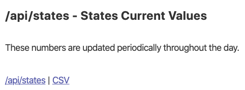
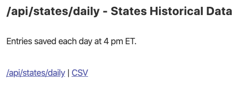
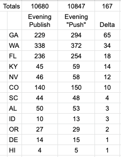

Publish to History at 4PM make it look like Current/History are out of sync when they are not.
It seems that some data aggregates are wrong or there is a time misalignment when computing totals per day: Looking in the same time (Tue Apr 7 10:48:22 EDT 2020) at:
https://covidtracking.com/api/states : Sum all deaths = 10,847 https://covidtracking.com/api/us/daily : Deaths count as of 04/06 = 10,680
At the time I did this analysis all states but: AR, NV, WY, MP in /api/states had a “dateModified”:“2020-04-06” or before. The four states (AR, NV, WY, MP) had “dateModified”:“2020-04-07”, but none had the death count modified since (or before) 2020-04-05. Conclusion: /api/us/daily shows a lower count of deaths than the sum of all deaths in /api/states
Comments
This is probably not a bug as much as unclear UI or an API that returns incomplete information.
We “publish” the history once per day at 5PM ET. We “push” the current numbers three times per day (12AM/5PM/12PM, I think).
Thus, the only time they should be in sync is from 5PM to 12PM.
I’ve added Elliot to this because he understands the process, Kai because he maintains the API, and Julia because she’s got sharp eyes.
Hello,
The delta you are seeing is the result of our “current” being updated three times per day (two of which we call “push” shifts, while the daily report is populated once per day on our 4-5 pm “publish” shift.
-
[ ] From the website:  
-
[ ] Here is a table of the difference: 
Thank you for the quick response. This issue is for a misalignment between api/states and /api/us/daily (not api/states/daily). I understand the different update schedules but if you have mutable aggregates (like sums for the current day) I was expecting to see them be updated in sync when there is a change. If that is not possible, I would make the daily aggregates be immutable and compute them only once at the end of the day (whatever day boundary you choose).
Yeah, I agree it is confusing. We’re discussing moving the ‘publish’ to history step to 8PM ET but it doesn’t resolve this issue.
I favor putting making all updates do a publish with a timestamp on the record to indicate when the data is from but it would be a big change and there is a resistance to changing history multiple times.
Alexis (@realfuture) thinks we need to update history at 12PM (your proposal) but that is operationally difficult. We don’t want to ask a bunch of people to stay up until midnight every day.
@lcucos Can you tell us how you are using the data? Are you hitting the API to build other stuff? Are you looking at the HTML site?
@careeningspace I’m going to reopen this but edit the name.
We can add date stamps pretty easily from the data side. Incorporating it into the website will need to be part of the table discussion
I am using the two apis (mentioned earlier) in different parts of my web app. I was thinking to make some changes on my end - to use only api/states/daily - but if you could update these aggregates I will happily wait
This issue has been automatically marked as stale because it has not had recent activity. It will be closed if no further activity occurs. Thank you for your contributions!
This issue has been closed because it was stale for 15 days, and there was no further activity on it for 10 days. You can feel free to re-open it if the issue is important, and label it as “not stale.”
I should be checking this in QC. Added that as a check. Not sure who should handle the actual error.